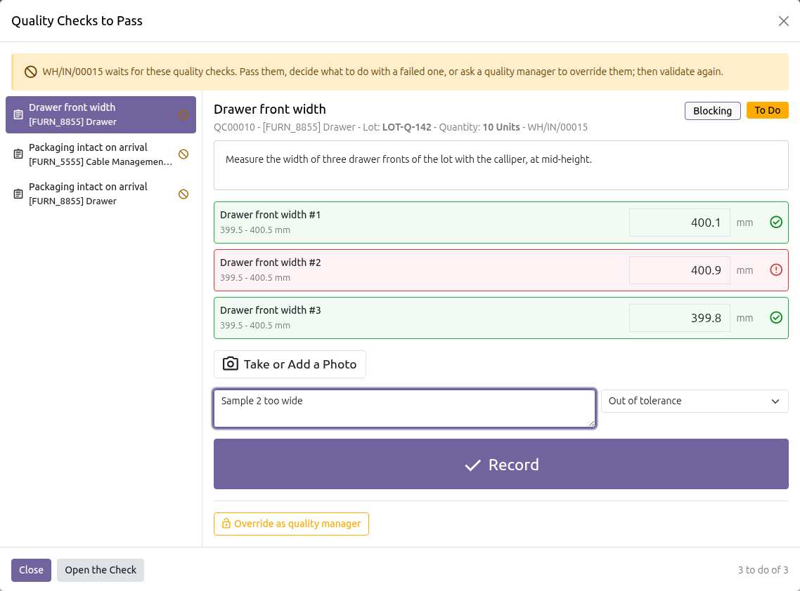
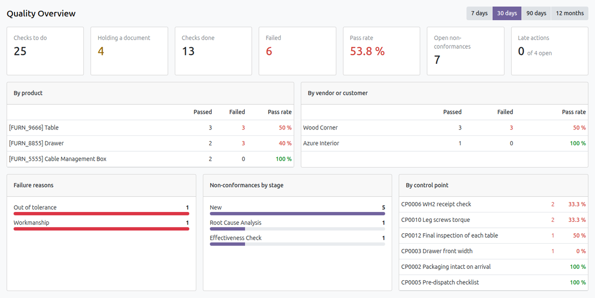
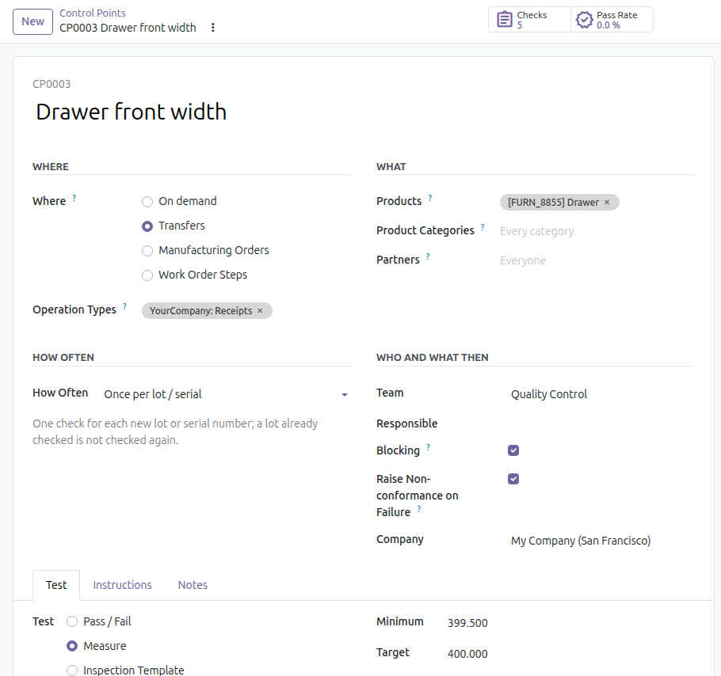
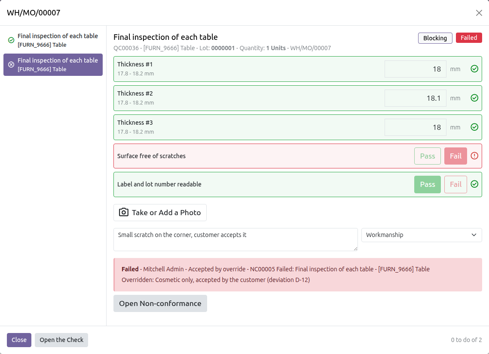
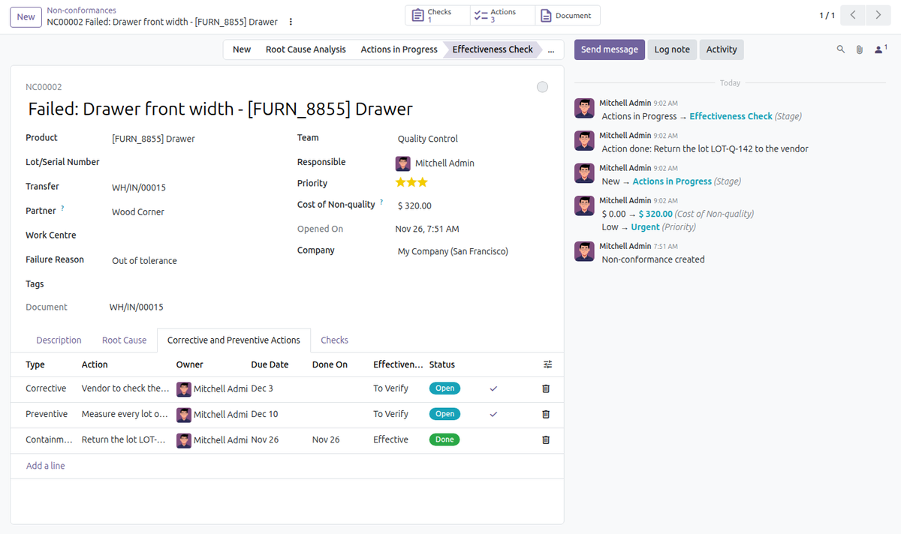
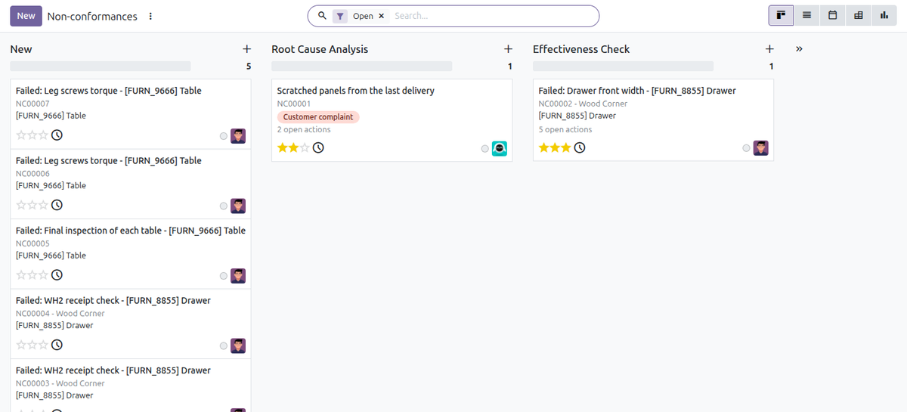
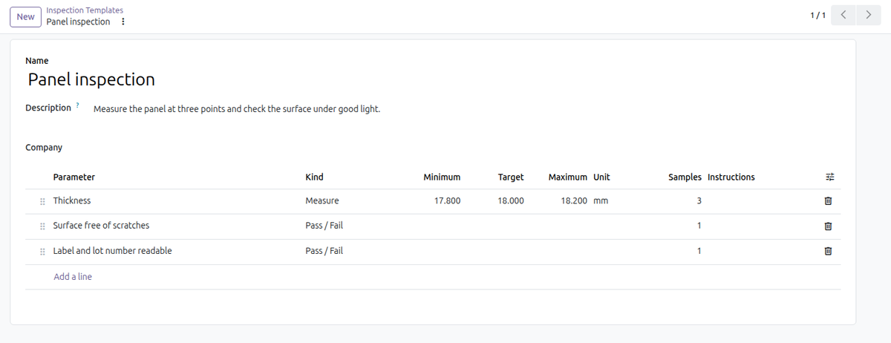
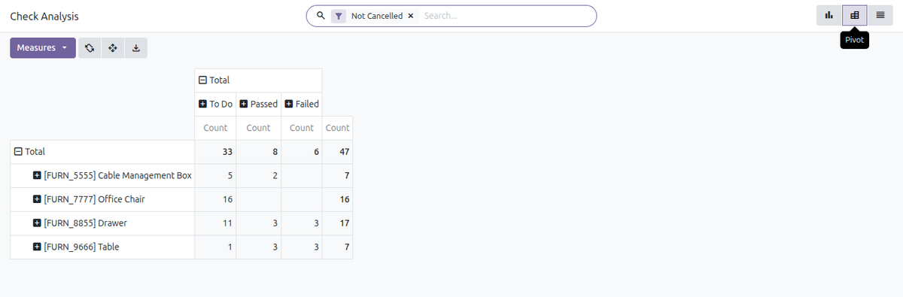

Email: odoomates@gmail.com
Quality management for Odoo Community: say what to check, record it on a touch-friendly screen, hold the documents until the checks pass, and close every problem with corrective and preventive actions.
Checks appear by themselves on the documents that match a control point; a failure raises a non-conformance that the team follows to its closing.








Your rating helps others find it; your requests and pull requests decide what comes next.
★ Rate us on Odoo Apps💡 Request a feature🐛 Report an issue★ Star us on GitHub